Melissodes Capstone
Streamlining Research of a ‘Nightmare Taxon’: Creating a framework to improve collection and identification of Oregon’s native Melissodes bees.
Kaiona Apio & Ryan Strobel
Data Science Capstone Project
Willamette University School of Computing & Information Sciences
Introduction
Pollinators play a vital role in maintaining healthy ecosystems and ensuring plant reproduction. However, the phrase “Save the Bees” has shifted the focus of pollinator protection towards European honeybees, which are non-native and often irresponsibly farmed, but the most urgent pollinators to research and protect are native bees that have existed in local ecosystems long before anthropocentric intervention and disruption.
Among these native bees, Melissodes bees (commonly known as long-horned bees) are key specialists in pollinating plants of the Aster family, which includes many plants that are native to Oregon like the Common Sunflower (Helianthus annuus) and plants that are endemic to the Pacific Northwest like the Columbia River Daisy (Columbiadoria hallii) & the Puget Sound Gumweed (Grindelia integrifolia).
With a strong foundation in Melissodes research under the supervision of Professor Briana Lindh at Willamette University, the curators of this project wanted to use advanced data manipulation tools like interactive visualization and applied machine learning to increase efficiency and accessibility in methodology practices.
Background
There is a deep importance to study species that have co-evolved with native plants and ecosystems for thousands of years. However, studying these bees presents challenges, particularly when it comes to correctly identifying species. Traditionally, scientists have relied on morphological identification, which is sorting similar bees by physical features like the color or shape of different anatomy. More recently, genetic (phylogenetic) identification has provided a new way to classify species. These two methods work in a feedback loop: physical descriptions help guide genetic research, while DNA analysis can reveal errors or hidden diversity in older classification systems. Despite overall advancements in the field of science, research on Melissodes bees has lagged in some regions. Even though the West Coast (including Oregon) has more Melissodes species than the East Coast, fewer studies have been conducted here, leaving gaps in our knowledge.
This project seeks to make Melissodes research faster and more accessible by evaluating different identification methods and creating new tools. A major obstacle has been the outdated LaBerge Key to Eumelissodes (1961), the primary guide for identifying these bees. To modernize this process, we developed Bee-Search, which is an R Shiny app to simplify species identification and provide an a straightforward and accessible user interface. The goal of this project is geared towards expand upon Bee-Search in two main ways, 1) generating another R Shiny app to aid specimen collection efforts, as a complement and 2) using machine learning to analyze future identification methods.
As we collect and analyze these data, we are ensuring that specimen collection and genetic research follow best practices for conservation and scientific integrity. By improving these foundational research steps, we hope to support better conservation strategies for Oregon’s native pollinators.
Methodology
A central objective of this project was data sustainability and the understanding that any data used would need to be accessible in different locations and new methods would need to be understandable to a semi-technical audience.
Data Engineering
This project has benefitted tremendously from our lab’s prior affiliation with the Oregon Bee Atlas, a project based at Oregon State University in Corvallis that aims to describe the diversity of all bees across the state. Collection efforts for this project began in earnest in 2018, and our lab has access to all of their records for Melissodes specimens from 2018-2020. This covers about 1700 individual bees, and includes information such as the collector, the time, date, and location of the collection event, and the type of plant that bee was gathering pollen or nectar from. Given the aforementioned difficulty of identification, only a small fraction of these bees are identified to the species level.
Using host plant data from the OBA, we compiled a list of known Melissodes hosts. Then, with the export tool on the community science website iNaturalist, we extracted a data set of nearly 100,000 sightings of these plants across the state of Oregon. This contains information such as time and date, latitude and longitude, and whether the plant was wild or cultivated. We are also using the iNaturalist API to retrieve new sightings as they are uploaded, which should allow us to gain a solid understanding of the distribution of these plants throughout the state, and in turn, the distribution of the bees that rely on them. Additionally, there are several species, such as M. rivalis and M. clarkiae, which rely completely on one type of plant (thistles and clarkias, respectively). While this data could prove particularly useful to target specialist pollinators like these, it could also be used to find areas with high densities of relevant flowering plants anywhere in the state. Our OBA survey dataset and our iNaturalist observations are both hosted on a postgres database with Railway.
Data Organization
The Lindh Lab has done quite a bit of research on Melissodes in prior years, and thanks to the Oregon Bee Atlas, we have well over 1,000 specimens available for morphological, genetic, and spatial analyses of all kinds. However, the nature of all these disparate inquiries means there are countless different ways to sort our physical specimens, and even the ones that have been processed in some way are prone to being moved around haphazardly. To address all of the chaos, we are creating a centralized specimen tracking system based on the unique accession numbers assigned to each specimen by the Oregon Bee Atlas. By using these accession numbers as primary keys, we should be able to join specimen metadata (sex, species IDs, and collection events), morphological characteristics (especially facial patterns), results from genetic sequencing, and photographs. This standardization will streamline future work by uniting our disparate data sets. Additionally, by restructuring old data sets to conform to this new system, we will be able to minimize data loss and redundancy in the Lindh lab’s future efforts.
Results
Our research focused on aiding the collection and identification of Melissodes specimens. The goals were to figure out how we can collect specimens faster and expand on physical trait identification methods while simultaneously organizing existing datasets.
Targeting Species with Known Host Plant Associations
Melissodes bees are specialists on Aster Family (sunflowers,
daises, asters), so flowers are a natural connection to focus our
collection perspective upon. Using the lubridate package in
R, the bee specimen and associated host plant data were wrangled from
the observation coordinates, which were organized into polygons. Now the
datasets could be joined, allowing for analysis of overlapping plants
& pollinators.
Statistical Analyses of Bee-Plant Relations
Once the data could be compared, a two-way ANOVA test can be administered to assess interaction effect based on the distances between different species of bees and plants. The goal of the ANOVA model is to test whether the mean distance to the nearest plant differs significantly among Melissodes bee species (acceptedScientificName). The test yielded a statistically significant overall effect (F(10, 744) = 3.375, p= 0.0003), indicating that certain Melissodes species forage at different mean distances from their nearest host plants. While the effect size was modest (η² = 0.043), this suggests that are species-specific foraging behaviors—potentially driven by floral preference or habitat specialization—influence spatial associations with Asteraceae. These findings underscore the importance of targeted collection strategies: by prioritizing areas where aster observations are dense (e.g., via iNaturalist data), researchers can optimize efforts to capture Melissodes bees during their active foraging periods.
After conducting the ANOVA, a Pearson’s Chi-squared test was run on the data connecting Melissodes species and Aster plants that they were collected on. The null hypothesis was that there is no relationship between bee species and plant genera, and the Chi-squared test returned a p-value of <2.2e-16, which would confirm a strong, statistically significant relationship between Melissodes bees and specific Aster plants as well as rejecting a null hypothesis.
However, this astonishingly low p-value was off-putting, so we tested the contingency table using Cramer’s V, which resulted in 0.328, suggesting a moderate association between Melissodes species and their preference for specific plants in the Aster genera, but other factors may also play a role (e.g. habitat, season, predation). The Cramer’s V test also returned a warning that the Chi-squared approximation may be incorrect, which is most likely due to the smaller values within our table. To problem-solve for our small sample sizes, we ran a Fisher’s Exact test.
After running a Fisher’s Exact Test for Count Data (based on 10000 replicates), the data returned a simulated p-value of 9.999e-05, which strongly rejects the null hypothesis that there is no association between bee species and plant genera. Therefore, we felt confident in shifting the perspective of Melissodes collection methods towards observed Aster plants.
Generating an Accessible R Shiny
To further assist host-plant based research design, the Collections Shiny app was created to help users identify plant-pollinator relations on the genus-species levels respectively, as well as using geospatial data to plot Melissodes and Aster observations. This app addresses a critical bottleneck in native bee research by spatially linking previous Melissodes collection efforts to iNaturalist observations of their Asteraceae host plants via an accessible, user friendly platform.
To recover from the frustrations of the previous statistical tests, a Sankey diagram was generated to asses any significant relationships between Melissodes specimens that were identified to species and the flowers that they were collected upon.
Fig. 1) Sankey diagram showing the quantities of Melissodes specimens collected by the Oregon Bee Atlas based on the bee’s species in relation to the Aster plant that it was collected from.
Below the Sankey diagram, the Collections Shiny Dashboard contains two other levels with maps to Aster plant observations from iNaturalist and Melissodes collection sites from the Oregon Bee Atlas. The visualization of Aster family observations is able to be filtered by both year and genus, reducing search time and improving the likelihood of capturing target species of these specialist bees in their native habitats. In case there is a target species that lacks information about which genus it prefers in the Aster family, the map of collected Melissodes
Identification by Wing Morphology
Why Study Wing Veins?
Wing venation is an extremely useful characteristic when identifying bees at the family and genus level, and it’s usually one of the first features a scientist examines. Because wing development is closely tied to flight mechanics, mutations affecting the venation are rarely neutral, and most often disadvantageous. As a result, the structure of the wing evolves very slowly, and is considered “evolutionarily conserved.” Closely related bees tend to have similar vein structure, and several groups have distinctive features that makes them identifiable at a glance.
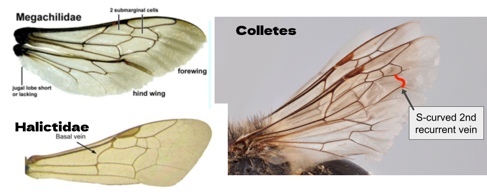
Following this principle, it stands to reason that smaller, more subtle differences may be present in distinct groups within a single genus of bees. We hypothesize that grouping bees by their wing morphology will reveal insights into their evolutionary relationships with one another. In collaboration with Jeremy Anderson and Justin Roch from the University of Massachusetts - Amherst, we have developed a framework to attempt to quantify the geometric variation in Melissodes wing veins.
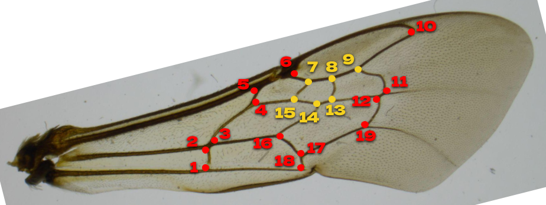
This map shows the 19 landmarks we placed on each wing scan. What these points represent for Melissodes specifically, we cannot say, but we followed this map to ensure the shape files we send back to Justin can meaningfully contribute to their much larger collection of wing scans.
Methodology
To prepare our database of wing images, we selected a few representatives from each morphogroup of our bees that our lab has sequenced in the past. We pulled the right forewing from each specimen and placed it on a microscope slide labeled with the accession number. Then, to minimize variation from curvature, we pressed each wing flat beneath a cover slip, with clear nail polish on the corners to fix it in place.
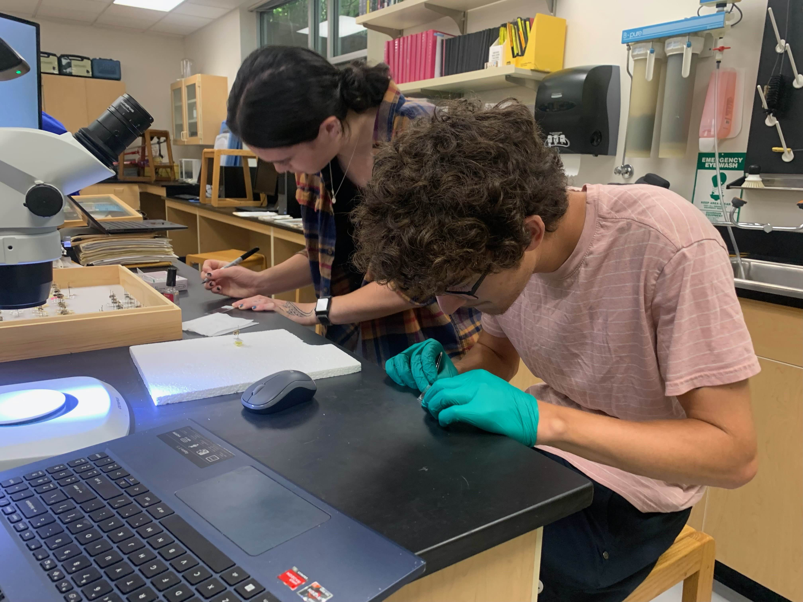
We placed our slides on the microscope and used the backlight to maximize contrast and minimize glare. We captured an image of each wing and named the file according to that specimen’s accession number.
Geometric Morphometrics
Wing vein analysis is an emerging field in the study of insect
taxonomy, and quantitative analysis of the differences in shapes is
growing in popularity. This type of analysis is called geometric
morphometrics, and a few R packages to facilitate its study have been
developed. We will use one called StereoMorph to place landmarks on our collection of bee wing scans and extract mathematical representations of the structures of each wing.
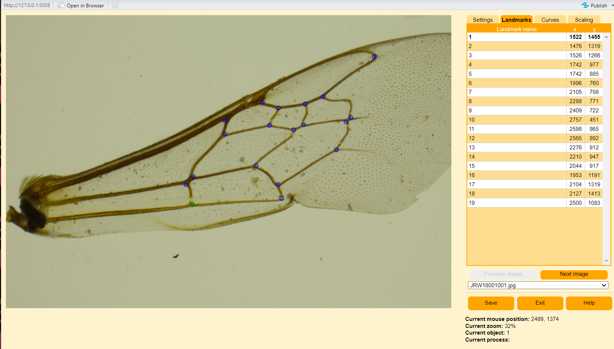
These insects are very small and fragile, especially after sitting for years in room-temperature cardboard boxes. We did unfortunately damage a few specimens in the process of pulling wings. Some were torn, and some got folded over beneath the cover slip. Using the backlog of complete wings, however, we were able to estimate the geometry of any missing points and fill them in.
Finally, we are able to statistically compare the shapes of the wings. Using a type of statistical shape analysis called a Procrustes fit, we were able to calculate the scaling, transposition, and rotation parameters that results in the optimal superimposition between any two shapes. This creates a normalized series of coordinate data that will highlight the differences between individual bees.
Using the standardized coordinates, we can perform a PCA to see if any obvious clusters of closely related bees emerge. We can plot the resulting principal components, and compare our results with the preliminary species IDs we already have for each specimen. This allows us to handle landmark coordinates and categorical variables such as those species IDs.
Considerations
Like other morphologic traits used for identifying these bees, sexual dimorphism is a major confounding factor. Essentially, it means that male bees from two different species will resemble one another more closely than they resemble a female of the same species. This principle even applies to the shapes in the wings, as seen below.
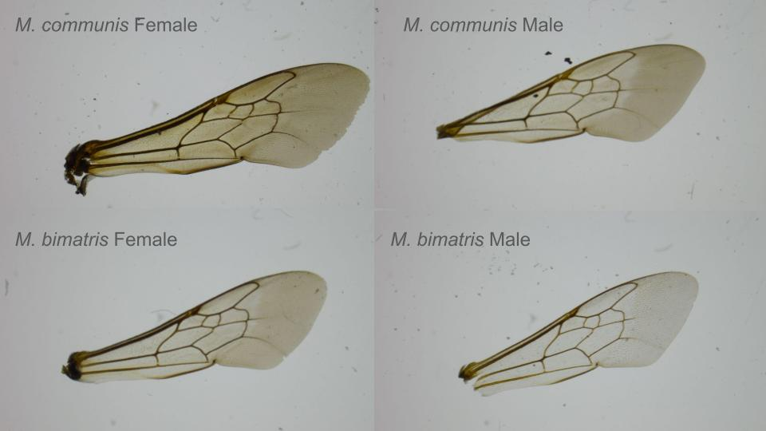
This means that without considering genetic relatedness, we will need to separate our dataset by sex.
Attempting Naive Classification Based on Morphology
The majority of specimens that went into our collection of wing images have already been sequenced, but in order to test the validity of the landmarking process, we will see if any coherent clusters emerge just by analyzing the geometry of the wing structure. Each specimen has previously been assigned a “group” based on other characteristics. The majority of species have been identified based on morphology, such as facial patterning or the presence of a “flap” in a specific place on the underside of an abdomen. However, for the confusing agilis/subagilis/trinodis species complex, this information is combined with clusters extracted from prior phylogenetic groups.
Variation of normalized male landmarks
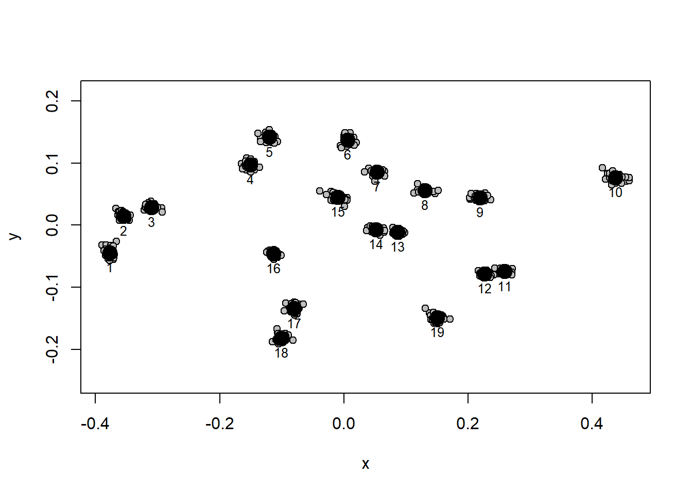
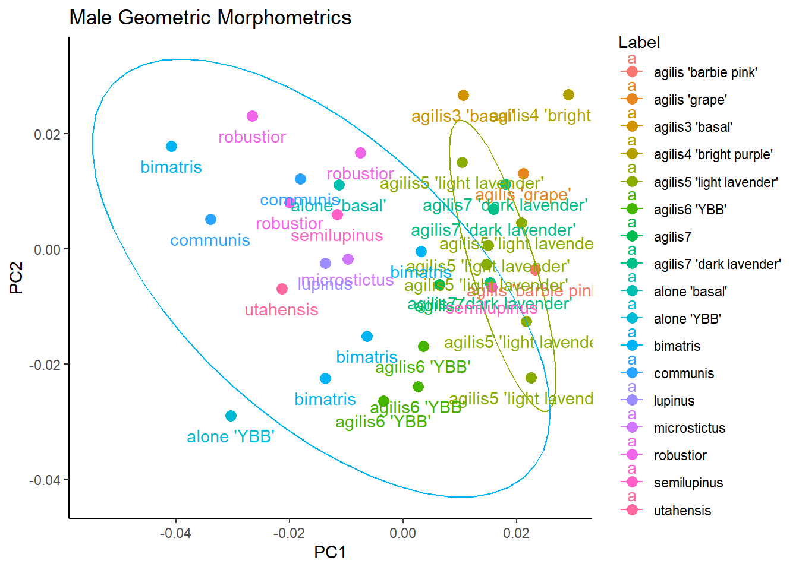
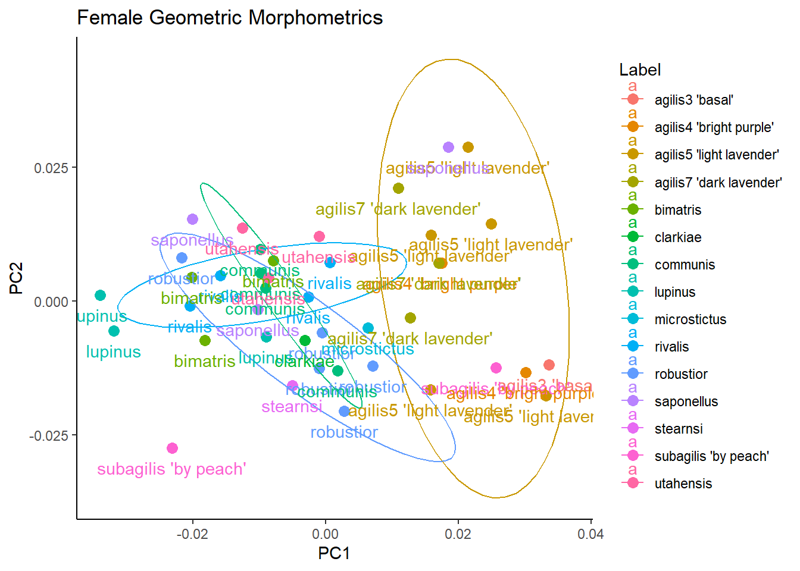
Validating Assumptions (Can PCA separate Melissodes from other Bees?)
3 male and 3 female bumblebee (Genus Bombus) wings were landmarked and added to the model to test how capable it is of distinguishing differences in morphology.
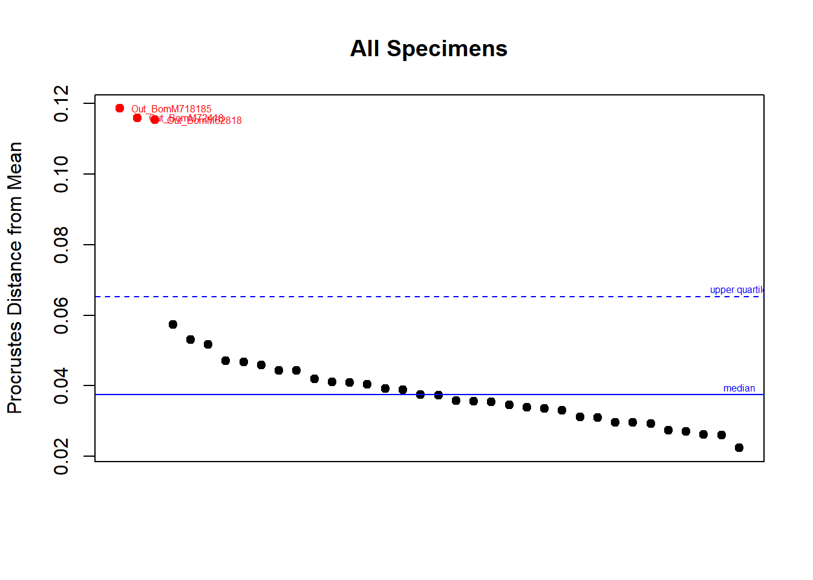
Out_BomM718185 Out_BomM72418 Out_BomM62818 JRW2046888 JRW2019979
36 35 34 27 7
JRW2031179 JRW2019988 JRW1907011 JRW1927868 JRW2041819
14 22 32 5 24
JRW2031176 JRW1927593 JRW2019982 JRW2018684 JRW2029772
13 2 8 6 9
JRW1927860 JRW2042162 JRW2017672 JRW18029014 JRW2033186
4 23 21 26 18
JRW2033116 JRW2030961 JRW1927867 JRW2033053 JRW1913361
17 11 20 16 33
JRW1911074 JRW2033052 JRW2030962 JRW2031201 JRW1927798
1 15 12 30 3
JRW2031174 JRW1924358 JRW2119346 JRW18187012 JRW2030744
25 31 19 28 10
JRW2031355
29 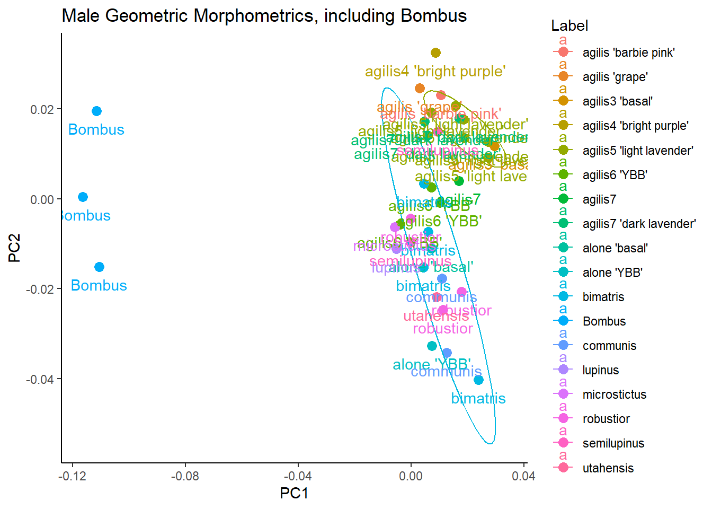
Integrating Genetic Information
One possible confounding factor is the use of genetic information to determine our groupings in the agilis/trinodis species complex. This is where we get the color nicknames for certain groups. While most other bees have been grouped purely according to morphology, we constructed several groups called “agilis”, based almost solely on genetic data. From here, we will attempt to define new species partitions based on sequence data that applies equally to all of our specimens.
ASAP
To accomplish this grouping, we will employ a method from biotools called ASAP (Assemble Species by Automatic Partitioning). Published in 2020 by Nicolas Puillandre et al., this program uses hierarchical clustering of pairwise genetic distance to identify partitions of putative species that are statistically supported. ASAP ranks these partitions by sequence divergence to find groups that minimize within-group distance and maximize between-group distance.
For this analysis, we used a GUI implementation called ASAPy (available on GitHub), to validate or contradict our pre-existing species groups. Additionally, we will combine our old PCAs with a new technique called Canonical Variate Analysis (CVA), so we will drop species groups with fewer than 2 observations of the same sex.
ASAP Categorization
From our 67 specimens with genetic information, ASAPy found one failed sequence that did not group with any others. After removing this individual, we were left with 66 individuals from approximately 18 different species, the majority of which grouped nicely according to the labels they started out with.
| ASAP Bin | Label | Sample Count |
|---|---|---|
| 1 | agilis ‘barbie pink’, agilis3, agilis4, agilis5 | 16 |
| 2 | agilis6, agilis7 | 10 |
| 3 | agilis6 | 1 |
| 4 | agilis ‘basal’, utahensis | 2 |
| 5 | bimatris | 6 |
| 6 | rivalis | 4 |
| 7 | utahensis | 3 |
| 8 | semilupinus | 2 |
| 9 | bimatris | 1 |
| 10 | agilis4 | 1 |
| 11 | agilis ‘grape’ | 1 |
| 12 | robustior | 7 |
| 13 | saponellus | 3 |
| 14 | subagilis ‘by peach’ | 1 |
| 15 | stearnsi | 1 |
| 16 | lupinus | 1 |
| 17 | communis | 5 |
| 18 | subagilis ‘by peach’ | 1 |
PCA with Genetic Information
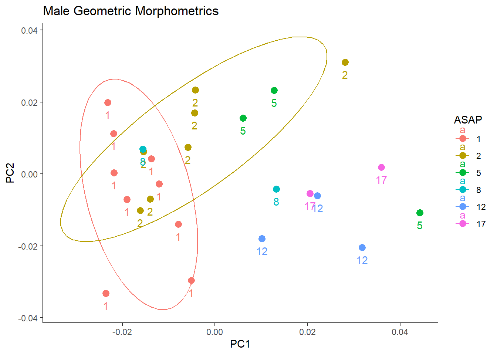
Results of Wing tests
singular Covariance matrix: General inverse is used. Threshold for zero eigenvalue is 1e-10 cross-validated classification results in frequencies
1 2 5 8 12 17
1 7 1 0 1 0 0
2 2 4 1 0 0 0
5 1 0 2 0 0 0
8 0 1 1 0 0 0
12 0 0 1 0 1 1
17 0 0 0 0 2 0
cross-validated classification result in %
1 2 5 8 12 17
1 77.778 11.111 0.000 11.111 0.000 0.000
2 28.571 57.143 14.286 0.000 0.000 0.000
5 33.333 0.000 66.667 0.000 0.000 0.000
8 0.000 50.000 50.000 0.000 0.000 0.000
12 0.000 0.000 33.333 0.000 33.333 33.333
17 0.000 0.000 0.000 0.000 100.000 0.000
overall classification accuracy: 53.84615 %
Kappa statistic: 0.39535Canonical Variant Classification Accuracy for Male Bees. A classification accuracy of around 50% is actually pretty amazing, considering the limited data available. A random 1/6 classification would result in about 16.7% accuracy, so this is very promising. The low kappa of 0.39 could potentially be improved with a larger sample size. The CVA for female bees was around 37.9%, with 8 possible groups, and a kappa of 0.276. Still a great improvement over random guessing! For both groups, the classifier showed the strongest accuracy with Melissodes communis samples, which checks out with our biological understanding! M. communis is grouped into a different subgenus than our other specimens, supporting our hypothesis that more distantly related bees will be easier to differentiate than close relatives.
Results Addendum
Obviously, a major limitation for our model was the tiny sample size of genetically sequenced specimens. Each species group was lucky to have three representatives. I attempted to overcome this limitation by implementing two methods of bootstrapping. One, nicknamed “jitter clones,” added random noise to the placement of each landmark prior to the Procrustes fit, simulating digitization error or minor morphological variation. The second, nicknamed “synthetic chimeras,” randomly selected their post-procrustes offsets from the pool of bees in the same species group. While both of these approaches produced PCA vizualizations with extremely well-defined clustering, the CVA analysis performed on models with any combination of these techniques showed extremely high degrees of overfit, often resulting in a classification accuracy over 99%, even on datasets with over 1,00 specimens. Unfortunately, without more sophisticated techniques to simulate natural variation, there appears to be no good way to artificially increase the sample size of these datasets.
DNA sequencing is expensive, sensitive to contamination, and time-consuming. The sequences we get back often have ambiguous nucleotides that demand manual cleanup, or have been heavily degraded near the beginning or end. Given the paradoxical mix of uniformity and diversity these bees seem to exhibit, a wide breadth of data is necessary to capture each specimen’s unique charm. That being said, the Lindh lab’s limited collection of sequence data provided a surprisingly promising start to categorization, and hopefully in the future these associations can be strengthened by adding more replicates of familiar species and more diversity of new ones.
Discussion
While the iceberg of Melissodes research still remains at large, this project has carved out a significant chunk that acted as a barrier to undergraduate research, and ideally will provide a good framework for future scientists to easily plug in new data they gather.
BEEDB (Bee Database)
To continue the spirit of data sustainability and organization, we created a Bee Database for the Lindh Lab that focuses on organization, variable consistency, and user accessibility. Data sources were compiled across cloud storage, local storage, and external databases. The unpublished data from our lab was cleaned to fit the tidiest format possible, especially considering variable consistency and joinability across tables. This format and the normalized data will hopefully encourage future biologists to continue working on this project.
Data Ethics
When considering the ethical implications of this project, it is important to focus on possible misuse of data. We intend for this data to be used for ecological conservation and academic research, and it could raise ethical concerns if it were used for flora harvesting or apiary expansion because our work focuses on native plants and bees.
Conclusion
Overall, the problems that we set out to solve are still in existence, but the next researcher that steps up to the task will have an easier time than we did because of the generation of these tools. The Collections Shiny can be used to assess best future collection sites and currently observed relationships between Melissodes bees and Aster plants. We were also able to show that identification of Melissodes specimens by wing vein morphology is a promising method for future analyses of larger data sets, with more specimens.
If the multiple unrelated and often conflicting identification methods didn’t already make this clear, the diversity of life on Earth is much more complex than the classification systems we impose are fully capable of capturing. We attempted to unify the results of these different techniques on our specimens with a centralized database, and by populating it with our lab’s backlog of data, plus the occasional simplification of old tools we’ve made, we hope to leave the Lindh lab better than we found it.
While we weren’t able to completely solve the daunting challenge these insects have presented to scientists for over a hundred years, perhaps we made studying them a little easier for one scientist.
Works Referenced
Goodall, C. (1991). PROCRUSTES methods in the statistical analysis of Shape. Journal of the Royal Statistical Society Series B: Statistical Methodology, 53(2), 285–321. https://doi.org/10.1111/j.2517-6161.1991.tb01825.x
Lindh, B. C., Jolliff, A., Coleman, S., Skelton, M., Mack, O., & Hansen, M. (2023). Bee community differences among urban and rural sites in Oregon’s Willamette Valley. Northwest Science, 96(3–4). https://doi.org/10.3955/046.096.0307
Wright, K. W., Miller, K. B., & Song, H. (2020). A molecular phylogeny of the long-horned bees in the genus Melissodes latreille (Hymenoptera: Apidae: Eucerinae). Insect Systematics & Evolution, 52(4), 428–443. https://doi.org/10.1163/1876312x-bja10015